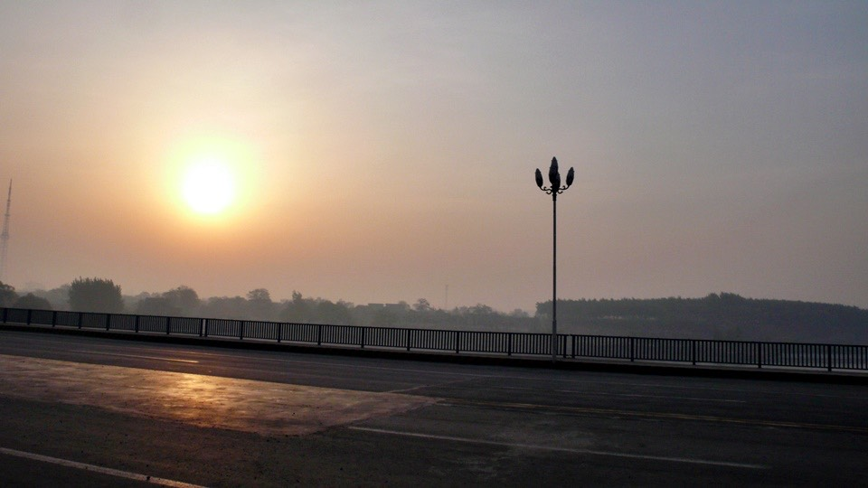
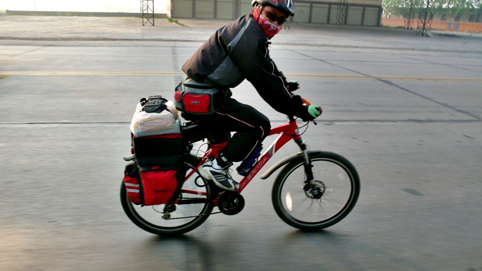
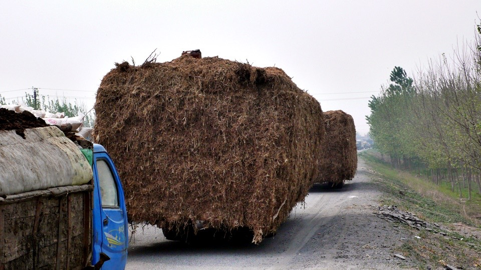
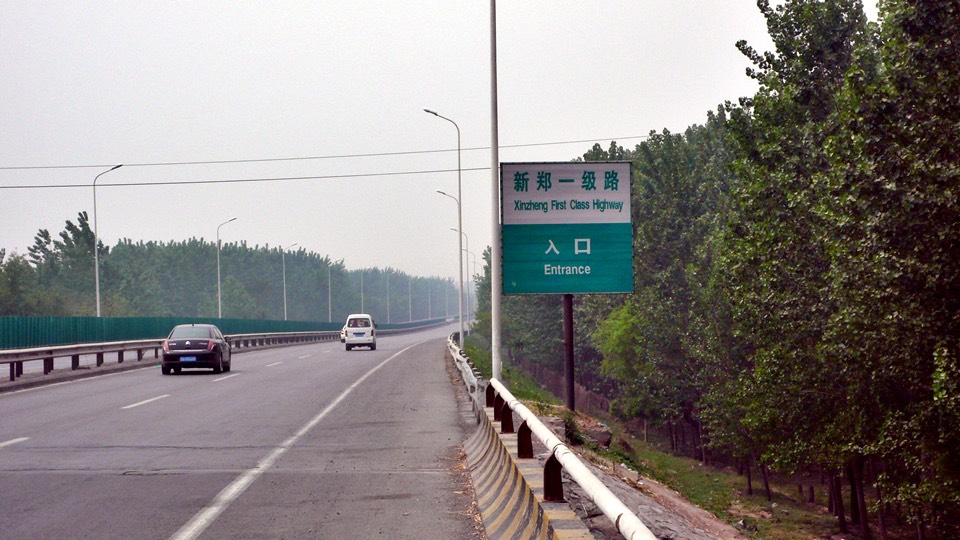
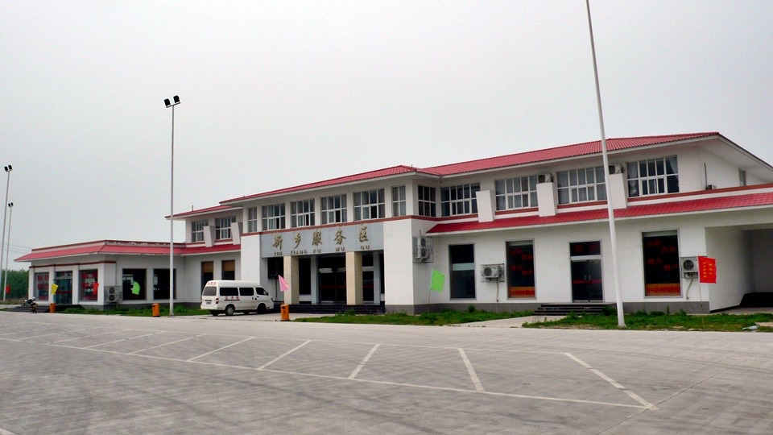
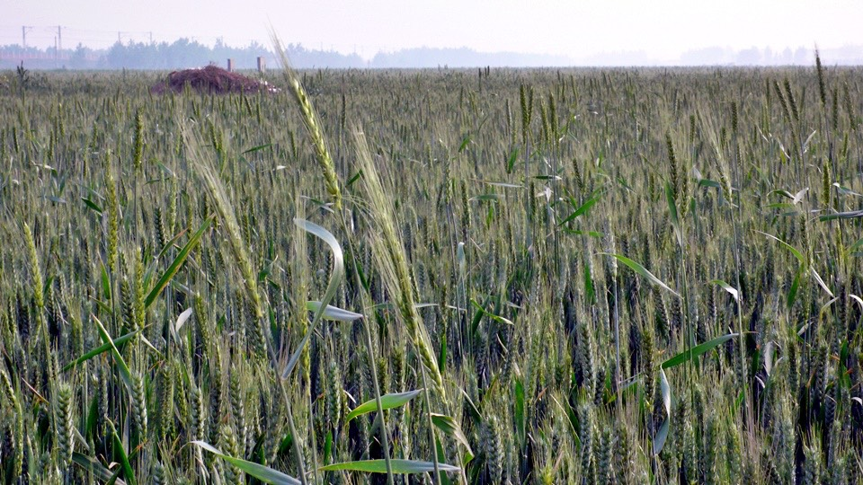
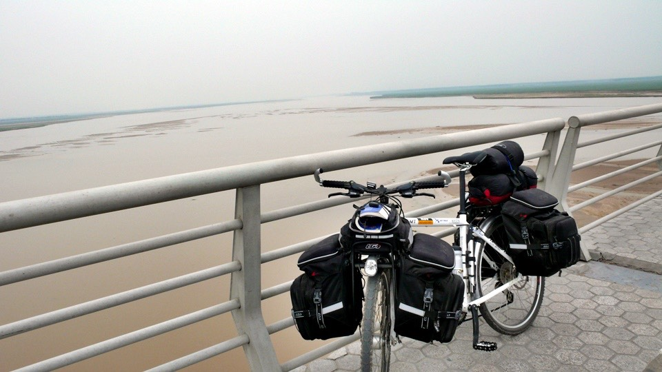
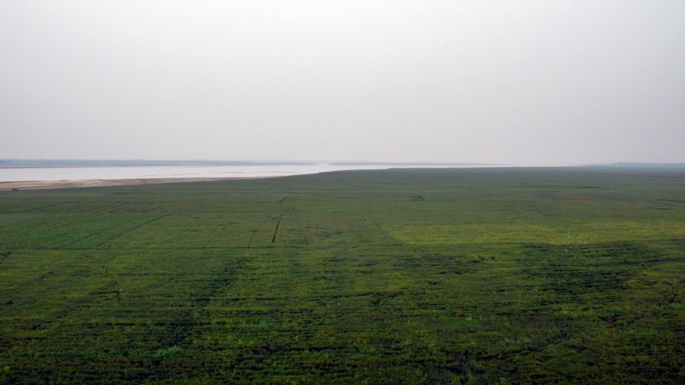

I didn’t know what was wrong with the weather.
was very hazy in the morning but it didn’t feel like it was going to rain,

A few minutes after I departed, I heard someone saying hello from the back.
I turned around, there was someone riding a bike, too.

His name is Lee Jih-Min. He is riding from Zhengzhou, Henan to Beijing, Hebei.
It will only take him 10 days to make a round trip if he rides 150 kilometers a day.
He is riding a bike made by Merida. He must not an amateur. Come to find out, not only he is going to Beijing for pleasure,
Merida is also sponsoring him and he will get some prices from the company if he finishes this trip.
I saw him riding casually with a red bike and red gears; I thought he must be a young man.
I told him I am 27 years old and how old are you?
“I am 40 years old… I have a son already.”
What! You take care yourself very well!
“It’s not take care of myself well, is covering myself well.”
Indeed, look at him wearing a mask to cover his whole face. This way he is not afraid of blowing sand and getting his face dirty.
I am envy he has a mask. But since I didn’t bring one, I will have to forget about it.
Originally I was planning to take advantage of the coolness of early morning to cover as much distance as possible,
so I deliberately rode very quick in order to pass him.
“I will go first… I need to get to Zhengzhou today.”
Less than 3 minutes later, it was his turn to pass me. So I have to say I want to ride slow so I can enjoy the scenery along the way.
“Brother Lee, you go first… :-)”
I got stuck in a ridiculous traffic jam. Whole bunch of trucks and trackers all got stuck in the road.
Then every one was driving on the dirt road.
That made things even worst. There was no space for me to ride. So I had to get off and walked in the dusty air.
I walked for a few hundred meters and then found out there were two roads merging into one up front
and there were many cars on both sides but neither side seems willing to budge.
So every one just got stuck in the intersection.
I don’t know how long this traffic jam is going to last.

Some tractors carried a huge pile of hays. From the back you can only see a stack of hays moving. Very funny.

After riding 107 national freeway for a few days, all the sudden, it disappeared today.
Unknowingly, I got on “Xinzheng First Class Highway.”
From the name itself, this must be the road from Xinxiang to Zhengzhou. But what is “First Class”?
The English translation is “First Class Highway”, is it a Highway?

I saw the barriers start appearing on both sides of the road and an “EXIT” sign every 10 km or so.
Then there was the rest area in half way.
Did I get on the highway by accident again?
Even though that was very possible, but no one was stopping me on this very much likely to be a highway.
The only reason I am continue riding because I didn’t see any sign indicated bicycles are prohibited.
Maybe China is the most suitable country to travel by bikes.
In China, except highways and railroads, you can pretty much ride on any roads.
Some roads will not allow tricycles, horse-drawn carriages, tractors, motorcycles, trucks and rickshaws.
But I haven’t seen any roads prohibit bikes.
Like yesterday, it was a slightly headwind weather.On this first class highway, I didn’t get off from any exits.
So I will pass Xinxiang and head to the destination Zhengzhou.
On this first class highway, except for exits, there were no restaurants and vendors so I didn’t have anything to eat.
At noon, I stopped at Xinxiang rest area. In this huge ruin like lonely rest area,
I ordered some fast food for 10 RMB, one portion of meat and two portions of vegetables, from a lady who looked sleepier than me.

I brought the tray to a table that was closest to Dido,
just as I was getting ready to start eating, the sleepy server said “Do not split on the floor”
Do I really look that messy?
Why is she telling me specifically not to split on the floor? Do I look like someone will do that?
I turned around and forced a smile at her and started my lunch.
With the rate I am going, if bikes are allowed on this first class highway and I don’t get stopped by the police,
I should be able to get to Zhengzhou, a pretty big city in the central China, before 5 o’clock.
After arrive Zhengzhou, I will have a whole day to rest. I can wandering around or sleep for a whole day to recover.
At 3:30 in the afternoon, I arrived at the Yellow River Bridge.
I remembered then, how come I didn’t see the river when I was riding from Hebei (means north of river) to Henan (means south of river),
since I was supposed crossing the river?
Before got on the Yellow River Bridge, there were signs indicated pedestrian and bikes are prohibited. I asked the guard on the bridge.
“How can I cross the bridge with a bike?” and pointed to the two signs prohibiting me and Dido to pass.

The guard was very cool. He looked exactly like Chinese, but when he spoke, he sounded like a Spanish person speaking Chinese.
Is that how you speak Hanan accent by mimicking a foreigner speaking Chinease? That’s not too difficult.
The guard said this is a narrow bridge and with traffic in high speed, I should not be riding. It’s too dangerous.
What! If I can’t ride then how do I cross the river.
Is there another way to cross the Yellow River? Do I just walk Dido over the bridge?
That was it. That was the solution.
Even though pedestrians and bikes are prohibited, but it does not prohibit a pedestrian walk a bike to cross the bridge.
I really didn’t understand this logic. But since the guard said so, I would just do so.
Walking the bike cross the bridge, there was wheat planted below the bridge.
All these days, there was wheat planted along the roads.
From far way, you can’t tell the difference between wheat and aquatic rice plantation.
Until you get close and you will find the soil was dry unlike aquatic rice must be planted in paddy field.

The wheat plantation extended endlessly, the bridge seemed very long.
I didn’t know when I would be able to finish walking across this bridge.
After walked for half hour, I started riding again along the sidewalk on the bridge and moving steadily.
I though the Yellow River must be very wide with roaring waves and flow into the sea with grandeur.
The river should be so wide that you can’t see the other side of the bank if you are standing on this side of the river.

But when I saw it in person, even though it was really wide, but still it is not as big as I though.
But the water was extremely yellow, full of dirt.
The wheat plantation along the Yellow River must be planting on the deposits from the Yellow River. An extraordinarily fertile plain.

Passed the Yellow River is Zhengzhou. Riding on the Garden Road, it felt like one of those European boulevards.
You get a sense that the government want to develop Zhengzhou into a big city in the central China. This will be a likeable place.

Strolled down the road and checked if there were any hotel signs. Luckily I found the hotel streets.
The street was full of loud Taiwanese pop music. Young men were playing pools, bystanders were no longer paying any attention to me.
I found a comfortable room for 30 RMB. Because the room was very comfortable, so I decided to stay here for two nights.
One night was 30 RMB, two nights were 55 RMB with 5 RMB discount, not bad at all.

There was a screw loosen in Dido’s front rack and I couldn’t screw it back because the threads were already wear off.
I will need to find a welding place tomorrow and ask them to weld all the screws in the front and back racks.
This way it will give me a peace of mind while riding the bike.
Dinner was taking care of at the night market.
The atmosphere was about the same as the night market in Taiwan with one exception, the price was much cheaper here.
There were a lot of street vendors selling food. It was a big struggle walking down the street because I want to try everything.
Finally I picked a wonton vendor. A big bowl of wonton soup was 3 RMB. It was as big as a washbasin and filled with wontons.
No wonder the woman making the wontons was so fast. If she was slow, then they wouldn’t be able to serve all the customers.
I counted while I was eating this big bowl of wonton soup. There were total of 25 wontons (and I am stuffed).
Before I got back, I bought a sweet potato weighted at least 1 kilogram (3 RMB) for snack when I watch TV and read a book.
While I was at the night market, I found an internet café.
If I have nothing to do tomorrow, I can spend some time here. That’s if I can get Dido fixed first.
I am so blessed to plan some free days in this trip.
Tomorrow let’s have a one day tour at the Yellow River!